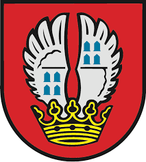
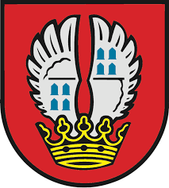

Meine Stadt Eschborn
 

Die offizielle Webseite mit Informationen rund um das Leben in Eschborn für Einheimische, Neubürger, Gäste und Gewerbetreibende.
Aktuelle Themen
Veranstaltungen : Konzerte, Theater, Lesungen - Alle Events im Veranstaltungskalender Infos zur Buntestagswahl 2025: Voraussichtlicher Wahltermine am 23. Februar 2025. In Kürze erfahren Sie hier mehr. Regionaltangente West: Neue Direktverbindungen werden geschafft und Eschborn ist dabei im Planfeststellungsabschnitt Nord. Neubau Wiesenbad: Ein neues 50m langes Indoor-Schwimmbecken entsteht.
Konatkt
uns an und wir geben weiter Hinweise! Lasst uns wissen, welche Services fehlen, welche verbessert
werden können und was neu gestalten werden kann! Stadt Eschborn Tel. 016196 - 410 999
kontakt@eschborn.de